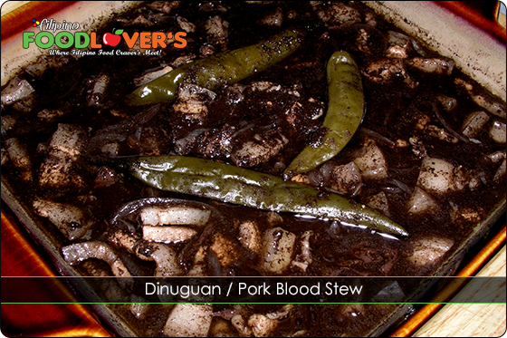
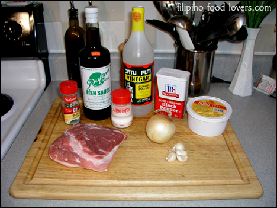
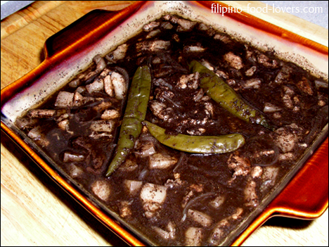
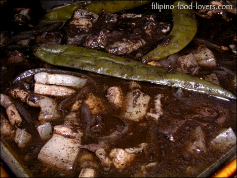
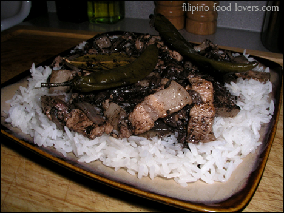
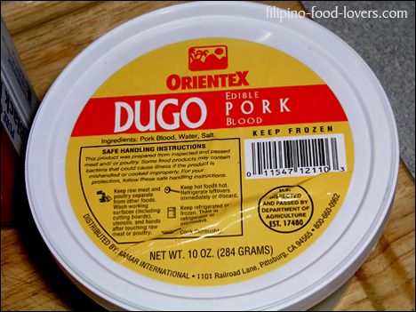

Dinuguan
There are only a few Filipino I have met that didn’t care for this particular dish. A lot of times people judge this dish before tasting it. The truth is for
most people that do actually taste it, my American mother in-law for example, they actually like it.

The only problem she had was knowing what it is.
Dinuguan or pork blood stew is a Filipino, savory
stew of blood and meat simmered in a rich, spicy
gravy of pig blood, garlic, chili’s, and vinegar. The
term Dinuguan come from the word dugo which
means blood. It is similar to a Singapore dish, pig’s
organ soup. The only difference is it does not have
vegetables in it. For western cultures this dish is
considered as unusual or maybe an alarming dish
even though it is similar to European-style blood
sausage or British black pudding, but in a saucy,
stew form.
This dish is so popular in the Philippines that you
will find it at just about any occasion, from simple
family gatherings to weddings.
For my kababayan who just recently moved here
to the U.S., especially if you don’t live in the major
cities such as Chicago, Los Angeles, or New York
City, you can still find edible pork blood at just
about any International grocery store in the frozen
section.
One of the most popular brands here is Orientex.
They have beef blood also. Ok, so enough talking and let’s get down to the recipe.
Ingredients:
- 1½ Lbs. of Pork belly (pork butt is fine)
- 10 oz. of Edible pork blood (Orientex)
- 2 Cups of Chicken stock (water is fine)
- 1 Cup of Vinegar (Datu-puti)
- 3 Tbs. Fish Sauce (Rufina)
- 4 Cloves of garlic, peeled and smashed
- 1 Medium onion sliced thinly
- 1 Bay leaf (Laurel leaf)
- 4 Pcs. Finger peppers
- ½ Tbs. Ground black pepper
- 1 Tsp. Msg (Aji-no-Moto)
- ½ Tbs. Kosher salt
- Oil for sauteing
- Like 18K
Directions:
- Prepare pork blood by straining it and separating the blood that is in a jelly form in a separate bowl.
- Next add ¼ cup of water and break up the jellied blood with your hands and set aside.
- Slice pork into small bite sized pieces and set aside.
- Using a casserole dish, heat 1 Tbs. of corn oil, add the pork, and spread it evenly on the bottom of the casserole dish.
- Cover and let it cook on medium low heat for three minutes without stirring it.
- Remove cover, stir the pork, and drain the liquid accumulated.
- Add garlic and saute for one minute, then add the onions, stir, and cover.
- Let it cook for another minute.
- Next add fish sauce and bay leaf and saute for 3 minutes.
- Then add ½ cup of vinegar, cover, and bring to a boil.
- Lower the heat and let it simmer for 3 minutes.
- Add the chicken stock and salt and let it simmer for five minutes.
- Add the jelly formed pork blood first, stir for about a minute, then add the rest of the pork blood and the finger peppers.
- Continue to stir for about two minutes, cover, and let simmer for another five minutes. Add another ½ cup of vinegar.
- Again cover and let it simmer for an additional 5 minutes.
- Adjust the taste by adding salt & pepper if needed.
- That’s it, you’re done. Serve with white rice, or Puto. Enjoy!
Puto – Filipino Rice Cake!
Note: This video is the updated (12-27-10) version of this recipe, I used “Sinigang Mix” for my souring agent rather than vinegar.




